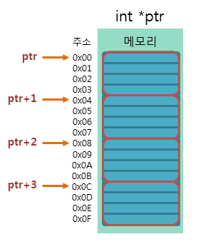

포인터 연산
포인터 연산
포인터는 값을 증가시키거나 감소시키는 등의 제한된 연산만을 할 수 있습니다.
C언어의 포인터 연산에는 다음과 같은 규칙이 있습니다.
1. 포인터끼리의 덧셈, 곱셈, 나눗셈은 아무런 의미가 없습니다.
2. 포인터끼리의 뺄셈은 두 포인터 사이의 상대적 거리를 나타냅니다.
3. 포인터에 정수를 더하거나 뺄 수는 있지만, 실수와의 연산은 허용하지 않습니다.
4. 포인터끼리 대입하거나 비교할 수 있습니다.
다음 예제는 타입에 따른 포인터 연산의 증가값을 비교하는 예제입니다.
예제
char* ptr_char = 0;
int* ptr_int = NULL;
double* ptr_double = 0x00;
printf("포인터 ptr_char가 현재 가리키고 있는 주소값은 %#x입니다.\n", ptr_char);
printf("포인터 ptr_int가 현재 가리키고 있는 주소값은 %#x입니다.\n", ptr_int);
printf("포인터 ptr_double이 현재 가리키고 있는 주소값은 %#x입니다.\n", ptr_double);
printf("포인터 ptr_char가 1 증가 후에 가리키고 있는 주소값은 %#x입니다.\n", ++ptr_char);
printf("포인터 ptr_int가 1 증가 후에 가리키고 있는 주소값은 %#x입니다.\n", ++ptr_int);
printf("포인터 ptr_double이 1 증가 후에 가리키고 있는 주소값은 %#x입니다.\n", ++ptr_double);
실행 결과
포인터 ptr_char가 현재 가리키고 있는 주소값은 0입니다.
포인터 ptr_int가 현재 가리키고 있는 주소값은 0입니다.
포인터 ptr_double이 현재 가리키고 있는 주소값은 0입니다.
포인터 ptr_char가 1 증가 후에 가리키고 있는 주소값은 0x1입니다.
포인터 ptr_int가 1 증가 후에 가리키고 있는 주소값은 0x4입니다.
포인터 ptr_double이 1 증가 후에 가리키고 있는 주소값은 0x8입니다.
위의 예제에서 모든 포인터에 저장된 초기 주소값은 0x00 입니다.
하지만 1을 증가시키는 포인터 연산 후 포인터가 가리키고 있는 주소는 각각의 포인터 타입에 따라 달라집니다.
그 증가 폭은 포인터가 가리키는 변수의 타입의 크기와 같게 됩니다.

예를 들어, int형 포인터의 증가폭은 int형 타입의 크기인 4바이트만큼 증가하게 됩니다.
이 법칙은 포인터의 뺄셈에서도 똑같이 적용됩니다.
다음 예제는 포인터끼리의 비교 연산과 대입 연산을 보여주는 예제입니다.
예제
int num01 = 10;
int num02 = 20;
int *ptr_num01 = &num01;
int *ptr_num02 = &num02;
if (ptr_num01 != ptr_num02) // 포인터끼리의 비교 연산
{
printf("포인터 ptr_num01이 가리키고 있는 주소에 저장된 값은 %d입니다.\n", *ptr_num01);
printf("포인터 ptr_num02가 가리키고 있는 주소에 저장된 값은 %d입니다.\n", *ptr_num02);
printf("포인터 ptr_num01과 ptr_num02는 현재 다른 주소를 가리키고 있습니다.\n\n");
ptr_num02 = ptr_num01; // 포인터끼리의 대입 연산
}
printf("포인터 ptr_num01이 가리키고 있는 주소에 저장된 값은 %d입니다.\n", *ptr_num01);
printf("포인터 ptr_num02가 가리키고 있는 주소에 저장된 값은 %d입니다.\n", *ptr_num02);
if (ptr_num01 == ptr_num02) // 포인터끼리의 비교 연산
{
printf("포인터 ptr_num01과 ptr_num02는 현재 같은 주소를 가리키고 있습니다.\n");
}
실행 결과
포인터 ptr_num01이 가리키고 있는 주소에 저장된 값은 10입니다.
포인터 ptr_num02가 가리키고 있는 주소에 저장된 값은 20입니다.
포인터 ptr_num01과 ptr_num02는 현재 다른 주소를 가리키고 있습니다.
포인터 ptr_num01이 가리키고 있는 주소에 저장된 값은 10입니다.
포인터 ptr_num02가 가리키고 있는 주소에 저장된 값은 10입니다.
포인터 ptr_num01과 ptr_num02는 현재 같은 주소를 가리키고 있습니다.